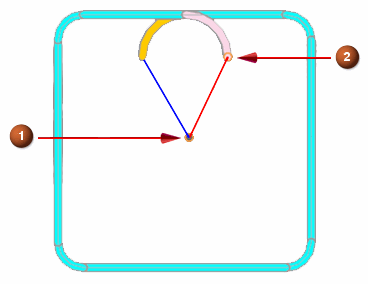

WEDM Cutcom enhancement
What is it?
You can turn on or off cutter compensation or Cutcom, at the thread point position. You can also access machine specific technology from the API interface based on a driver file that you create for your particular machine.
|
 |
|
Why should I use it?
You can return to the thread position after cutting without additional programming and modification to the WEDM post. You can access machine specific information in the WEDM dialog box, which reduces the number of steps you need to take to obtain this information, and therefore saves you time.
Where do I find it?
|
Application |
Manufacturing |
|
Prerequisite |
You must be creating a WEDM operation. |
|
Location in dialog box |
[WEDM operation dialog box]→Path Settings group→Non Cutting Moves |